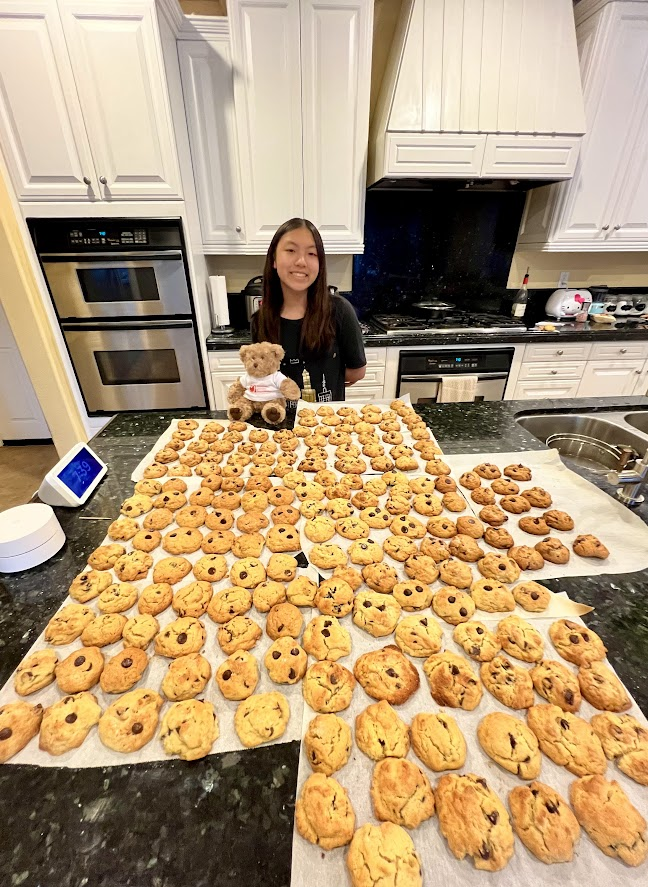

When I was 3, I was diagnosed with Kawasaki Disease (KD), the leading cause of heart disease for children in the U.S.
Since then, I've become an avid advocator for the disease, and am now the youngest paid intern at the Kawasaki Disease Foundation.
For Cookies4Kawasaki, a fundraiser I hosted, I hand-baked and packaged over 300 cookies to distribute in my local community.